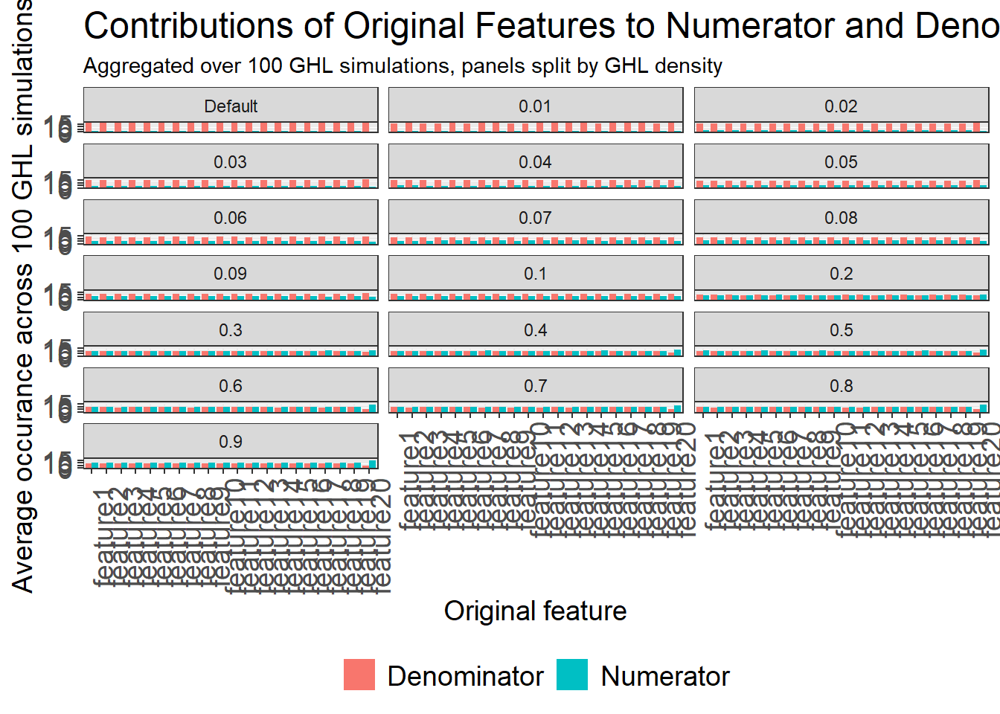
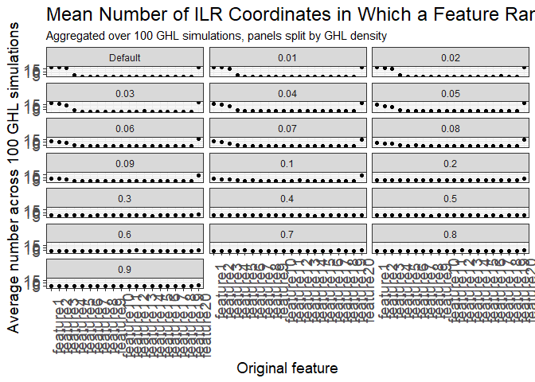

# Function that takes the GHL matrix and:
# 1. determines if original feature x_i contributes to the ilr coordinate in numerator or denominator
# 2. determines top k contributors for each of the
understand_randilr <- function(ghl, org_feature_names, top_k) {
abs_ghl <- abs(ghl)
sign_ghl <- sign(ghl)
ghl_summary <- map(c(1:ncol(ghl)), function(j) {
# Pull the j-th column
abs_col <- abs_ghl[, j]
sign_col <- sign_ghl[, j]
column <- ghl[, j]
# Get names of the original features that go into numerator (have positive 'coefficient' in the GHL mat.):
pos <- org_feature_names[sign_col == 1]
# Get names of the original features that go into denominator
neg <- org_feature_names[sign_col == -1]
# top-k absolute contributors and the values of their coeffs (not absolute, just as is)
idx <- order(abs_col, decreasing = TRUE)[1:top_k]
top_k_tbl <- tibble(
feature = org_feature_names[idx],
coef = column[idx]
)
# number of distinct absolute values of coeff
unique_coefs <- length(unique(abs_col))
list(
column = j,
unique_coefs = unique_coefs,
numerator = pos,
denominator = neg,
top_k_contribution = top_k_tbl
)
})
# Return tibble
tibble(
column = map_dbl(ghl_summary, ~ .x$column),
unique_coefs = map_dbl(ghl_summary, ~ .x$unique_coefs),
numerator = map(ghl_summary, ~ .x$numerator),
denominator = map(ghl_summary, ~ .x$denominator),
top_contribution = map(ghl_summary, ~ .x$top_k_contribution)
)
}
# Function:
# 1. Constructh square GHL matrix with n_org_features rows and column by using skew-symmetric matrix with `density`
# 2. Gathers info about contribution to numerator/denominator of each feature and top k contributors
# 3. repeats 1-2 n_iters times
density_impact <- function(seed_start = 2025, n_org_features, density, top_k, n_iters = 10) {
set.seed(seed_start)
org_feature_names <- paste0("org_feature", c(1:n_org_features))
results <- tibble()
for (i in 1:n_iters) {
# Generate GHL matrix
ghl <- create_ghl(n = n_org_features, density = density)
ghl_mat <- ghl[, -n_org_features]
# Gather info about new features
out <- understand_randilr(
ghl = ghl_mat,
org_feature_names = org_feature_names,
top_k = top_k
) |>
mutate(iter = i)
results <- results |>
bind_rows(out)
}
return(results)
}Density Impact
Theoretical overview
The purpose of this document is to show the influence of the density of a skew-symmetric matrix used for a generation of a GHL matrix used in the random ILR augmentation methods.
Reminder: Density \(\delta=0.1\) means that \(10\%\) of the off-diagonal entries in the skew-symmetric matrix \(S\) are non-zero; each such non-zero value is drawn from a standard normal distribution (\(s_{ij}\sim\mathcal{N}(0,1)\)) and \(s_{ji}=-s_{ij}\). The default density refers to the very sparse case in which exactly one off-diagonal element in the lower triangle and its mirror element in the upper triangle are non-zero; all other off-diagonal entries are zero.
To understand the impact of density of skew-symmetric matrix on the GHL matrix, and in consequence on the random ilr transformation, one needs to understand first in terms of the formulas how is the GHL matrix used in the random ilr transformation. In order to achieve it, let’s have a look on the below example with the use of the four dimensional compositional vector \(\mathbf{x},\, \mathbf{x} \in S^4\):
\[x \in S^{4}, \; x=\bigl[\,x_{1},\,x_{2},\,x_{3},\,x_{4}\,\bigr]\]
\[ \mathrm{ilr}(x)=\mathrm{clr}(x)\,\mathrm{L}_{-1}=\bigl[\,y_{1},\,y_{2},\,y_{3}\,\bigr], \]
where \(L_1\) is the GHL matrix without last column and \(dim\bigl(L_{-1}\bigr) = 4 \times 3\). The centered log-ratio transformation is given by:
\[ \mathrm{clr}(x)=\Bigl[\,\ln\frac{x_{1}}{g(x)},\,\ln\frac{x_{2}}{g(x)},\,\ln\frac{x_{3}}{g(x)},\,\ln\frac{x_{4}}{g(x)}\,\Bigr], \]
where \(g(x)\) is a geometric mean of vector \(\mathbf{x}\) entries. Let’s represent GHL matrix with the removed last column as follows:
\[ L_{-1} = \begin{bmatrix}a_{1} & b_{1} & c_{1} \\a_{2} & b_{2} & c_{2} \\a_{3} & b_{3} & c_{3} \\a_{4} & b_{4} & c_{4}\end{bmatrix} \]
\[ \begin{aligned} \mathrm{ilr}(x) &= \mathrm{clr}(x)\,\mathrm{L}_{-1} \\ &= \Bigl[\, a_{1}\ln\frac{x_{1}}{g(x)} + a_{2}\ln\frac{x_{2}}{g(x)} + a_{3}\ln\frac{x_{3}}{g(x)} + a_{4}\ln\frac{x_{4}}{g(x)},\; b_{1}\ln\frac{x_{1}}{g(x)} + b_{2}\ln\frac{x_{2}}{g(x)} + b_{3}\ln\frac{x_{3}}{g(x)} + b_{4}\ln\frac{x_{4}}{g(x)},\; c_{1}\ln\frac{x_{1}}{g(x)} + c_{2}\ln\frac{x_{2}}{g(x)} + c_{3}\ln\frac{x_{3}}{g(x)} + c_{4}\ln\frac{x_{4}}{g(x)}\, \Bigr] \\ &= \Biggl[\,\ln\frac{x_{1}^{a_{1}}x_{2}^{a_{2}}x_{3}^{a_{3}}x_{4}^{a_{4}}}{\bigl[g(x)\bigr]^{a_{1}+a_{2}+a_{3}+a_{4}}},\; \ln\frac{x_{1}^{b_{1}}x_{2}^{b_{2}}x_{3}^{b_{3}}x_{4}^{b_{4}}}{\bigl[g(x)\bigr]^{b_{1}+b_{2}+b_{3}+b_{4}}},\; \ln\frac{x_{1}^{c_{1}}x_{2}^{c_{2}}x_{3}^{c_{3}}x_{4}^{c_{4}}}{\bigl[g(x)\bigr]^{c_{1}+c_{2}+c_{3}+c_{4}}}\Biggr] \\ &= \Bigl[\,\ln\!\bigl(x_{1}^{a_{1}}x_{2}^{a_{2}}x_{3}^{a_{3}}x_{4}^{a_{4}}\bigr),\; \ln\!\bigl(x_{1}^{b_{1}}x_{2}^{b_{2}}x_{3}^{b_{3}}x_{4}^{b_{4}}\bigr),\; \ln\!\bigl(x_{1}^{c_{1}}x_{2}^{c_{2}}x_{3}^{c_{3}}x_{4}^{c_{4}}\bigr)\Bigr] \end{aligned} \]
The last equality in the above representation of the random ilr transformation is the consequence of the following property of GHL matrix under consideration:
\[ \mathbf{1}_{n}^{\mathsf T}L_{n,n-1}=\mathbf{0}_{n-1}^{\mathsf T} \]
therefore: \(a_{1}+a_{2}+a_{3}+a_{4}=0\). Similarly for \(b_{i}, c_{i}, i \in \{1,2,3,4\}\). Therefore, the contribution of a original feature \(x_i\) to the new coordinate after random ilr transformation (\(y_i\)) depends on the sign of coefficients from GHL matrix \(a_i, b_i, c_i, i \in \{1, \dots, 4\}\). For instance, in the considered example of \(\mathbf{x}, \, \mathbf{x} \in S^4\) let’s focus on the first coordinate resulting from the random ilr transformation. Let’s assume that \(a_1, a_3 > 0\) and \(a_2, a_4 <0\). Then, the new first ilr coordinate has the following form:
\[ y_{1}=\ln\!\left(\frac{x_{1}^{a_{1}}\,x_{3}^{a_{3}}}{x_{2}^{a_{2}}\,x_{4}^{a_{4}}}\right) \]
In such a case original features \(x_1, x_3\) contribute to the new coordinate in the numerator, while covariates \(x_2, x_4\) contribute to the \(y_1\) in the denominator.
The strength of the contribution of a given original feature to the new random ilr coordinate depends on the absolute value of the coefficient from the GHL matrix. For example, the contribution of \(x_1\) to ilr coordinate \(y_1\) depends on the \(|a_1|\). In the below analysis term top k contributor will be used.
Top k contributor: Feature \(x_j\) coming from compositional vector \(\mathbf{x}, \, \mathbf{x} \in S^p\) is considered as the top \(k\) contributor to the new ilr coordinate \(y_i, \, y_i = \ln\!\bigl(x_{1}^{w_{1}}x_{2}^{w_{2}} \dots x_{p}^{w_{p}}\bigr) \; \text{where} \; \mathbf{y} = \bigl(y_1, y_2, \dots, y_{p-1} \bigr)\) when the absolute value of the coefficient from GHL matrix associated with \(x_i\) ranks within top \(k\) largest absolute coefficients \(|w_1|, |w_2|, \dots, |w_p|\).
Analysis
Helper functions used in this script:
In the below analysis the following scenario is considered:
input data has \(20\) covariates,
analyzed density of skew-symmetric matrix : default density (very sparse skew-symmetric matrix) and \(\delta \in (0.01, 0.02, \dots, 0.1, 0.2, 0.3, \dots, 0.9)\),
for each density level of a skew-symmetric matrix, 100 independent GHL matrices are generated,
for a given GHL matrix, the proportion of times when a given original feature contributes to the numerator vs. denominator along with the top \(5\) contributors are analyzed.
Contribution to numerator vs denominator
For every original feature, count how often it appears in a numerator versus a denominator across all new ILR coordinates (this is, as shown above, determined by the GHL-matrix coefficients). The bars represent the average number of occurrences per original feature over the \(100\) simulations.
# label: simulation_num_denom
org_features <- 20
top_k <- 5
n_iters <- 100
seed_start <- 567
results <- tibble(
density = c(NA_real_, seq(0.01, 0.09, by = 0.01), seq(0.1, 0.9, by = 0.1))
) |>
mutate(
ghl_analysis = map(density, ~ density_impact(
seed_start = seed_start,
n_org_features = org_features,
density = .x,
top_k = top_k,
n_iters = n_iters
))
) |>
unnest(ghl_analysis)
# We repeat GHL simulation with a given density of skew-symmetric matrix n_iters times
# For a given density, on average, how many times is the original feature_k selected into numerator vs denominator
# Max number of occurrence in numerator/ denominator: (n_org_features - 1) * n_iters
results |>
select(density, iter, column, numerator) |>
unnest(numerator) |>
rename(feature = numerator) |>
count(density, feature, name = "numerator") |>
mutate(numerator = numerator / n_iters) |>
left_join(
results |>
select(density, iter, column, denominator) |>
unnest(denominator) |>
rename(feature = denominator) |>
count(density, feature, name = "denominator") |>
mutate(denominator = denominator / n_iters)
) |>
pivot_longer(cols = c(denominator, numerator), names_to = "part", values_to = "value") |>
mutate(
feature = str_remove(feature, "org_"),
feature = fct_reorder(feature, parse_number(feature)),
density = if_else(is.na(density), "Default", as.character(density)),
density = factor(density,
levels = c("Default", sort(as.numeric(setdiff(unique(density), "Default"))))
),
part = str_to_title(part)
) |>
ggplot(aes(x = feature, y = value, fill = part)) +
geom_bar(position = "dodge", stat = "identity") +
facet_wrap(~density, ncol = 3) +
theme_bw() +
# scale_y_continuous(breaks = scales::breaks_width(10), minor_breaks = NULL) +
labs(
x = "Original feature",
y = paste("Average occurance across", n_iters, "GHL simulations"),
title = "Contributions of Original Features to Numerator and Denominator in Random ILR Coordinates",
subtitle = paste("Aggregated over", n_iters, "GHL simulations, panels split by GHL density")
) +
theme(
legend.position = "bottom",
legend.title = element_blank(),
plot.title = element_text(size = 18),
axis.title.x = element_text(size = 14),
axis.title.y = element_text(size = 14),
axis.text.x = element_text(size = 14, angle = 90),
axis.text.y = element_text(size = 14),
legend.text = element_text(size = 14)
)Joining with `by = join_by(density, feature)`
Top 5 contributors
For a selected density of the skew-symmetric matrix used to generate the GHL matrix, the plot below displays the expected number of random ILR coordinates in which a given original feature ranks among the five most influential features, i.e., where it has one of the five largest absolute coefficients in the corresponding column of the GHL matrix.
results |>
select(iter, column, density, top_contribution) |>
unnest(top_contribution) |>
count(density, feature, name = "times_top_k") |>
mutate(
times_top_k = times_top_k / n_iters,
density = if_else(is.na(density), "Default", as.character(density)),
density = factor(density,
levels = c("Default", sort(as.numeric(setdiff(unique(density), "Default"))))
),
feature = str_remove(feature, "org_"),
feature = fct_reorder(feature, parse_number(feature))
) |>
ggplot(aes(x = feature, y = times_top_k)) +
geom_point() +
facet_wrap(~density, ncol = 3) +
theme_bw() +
# scale_y_continuous(breaks = scales::breaks_width(10), minor_breaks = NULL) +
labs(
x = "Original feature",
y = paste("Average number across", n_iters, "GHL simulations"),
title = paste("Mean Number of ILR Coordinates in Which a Feature Ranks Top", top_k, "Contributor"),
subtitle = paste("Aggregated over", n_iters, "GHL simulations, panels split by GHL density")
) +
theme(
legend.position = "bottom",
legend.title = element_blank(),
plot.title = element_text(size = 18),
axis.title.x = element_text(size = 14),
axis.title.y = element_text(size = 14),
axis.text.x = element_text(size = 14, angle = 90),
axis.text.y = element_text(size = 14),
legend.text = element_text(size = 14)
)